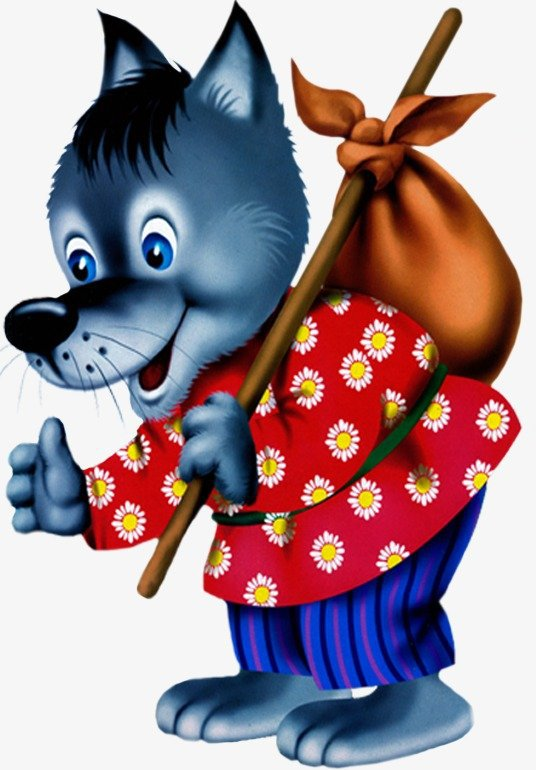

Сказка "КОЛОБОК" |
|
|
|
|
| Колобок |
Жили-были старик со старухой. Однажды просит старик:
— Испеки, старуха, колобок. — Из чего испечь-то? Муки нет. — Эх, старуха! По коробу поскреби, по сусеку помети; авось муки и наберется. Старуха по коробу поскребла, по сусеку помела, и набралось муки две пригоршни. Замесила на сметане, пожарила в масле и положила на окошечко остудить. Колобок полежал-полежал, да вдруг и покатился — с окна на лавку, с лавки на пол, по полу да к дверям, перепрыгнул через порог в сени, из сеней на крыльцо, с крыльца на двор, со двора за ворота, дальше и дальше. Катится колобок по дороге, а навстречу ему заяц: — Колобок, колобок! Я тебя съем! — Не ешь меня, косой зайчик! Я тебе песенку спою, — сказал колобок и запел: Я по коробу скребен, По сусеку метен, На сметане мешон Да в масле пряжон, На окошке стужон; Я от дедушки ушел, Я от бабушки ушел, От тебя, зайца, не хитро уйти! И покатился себе дальше; только заяц его и видел!.. Катится колобок, а навстречу ему волк: — Колобок, колобок! Я тебя съем! — Не ешь меня, серый волк! Я тебе песенку спою! Я по коробу скребен, По сусеку метен, На сметане мешон Да в масле пряжон, На окошке стужон; Я от дедушки ушел, Я от бабушки ушел, Я от зайца ушел, От тебя, волка, не хитро уйти! И покатился себе дальше; только волк его и видел!.. Катится колобок, а навстречу ему медведь: — Колобок, колобок! Я тебя съем. — Где тебе, косолапому, съесть меня! Я по коробу скребен, По сусеку метен, На сметане мешон Да в масле пряжон, На окошке стужон; Я от дедушки ушел, Я от бабушки ушел, Я от зайца ушел, Я от волка ушел, От тебя, медведь, не хитро уйти! И опять укатился; только медведь его и видел!.. Катится, катится колобок, а навстречу ему лиса: — Здравствуй, колобок! Какой ты хорошенький! А колобок запел: Я по коробу скребен, По сусеку метен, На сметане мешон Да в масле пряжон, На окошке стужон; Я от дедушки ушел, Я от бабушки ушел, Я от зайца ушел, Я от волка ушел, От медведя ушел, От тебя, лиса, и подавно уйду! — Какая славная песенка! — сказала лиса. — Но ведь я, колобок, стара стала, плохо слышу; сядь-ка на мою мордочку да пропой еще разок погромче. Колобок вскочил лисе на мордочку и запел ту же песню. — Спасибо, колобок! Славная песенка, еще бы послушала! Сядь-ка на мой язычок да пропой в последний разок, — сказала лиса и высунула свой язык. Колобок прыг ей на язык, а лиса — ам его! — и скушала. |
| Дед | |
| Баба | |
| Заяц | |
| Волк | |
| Медведь | |
| Лиса | |
| До новых встреч! | |
{kind=link}
{kind=link}
{kind=link}
{kind=link}
{kind=link}
{kind=link}
{kind=link}